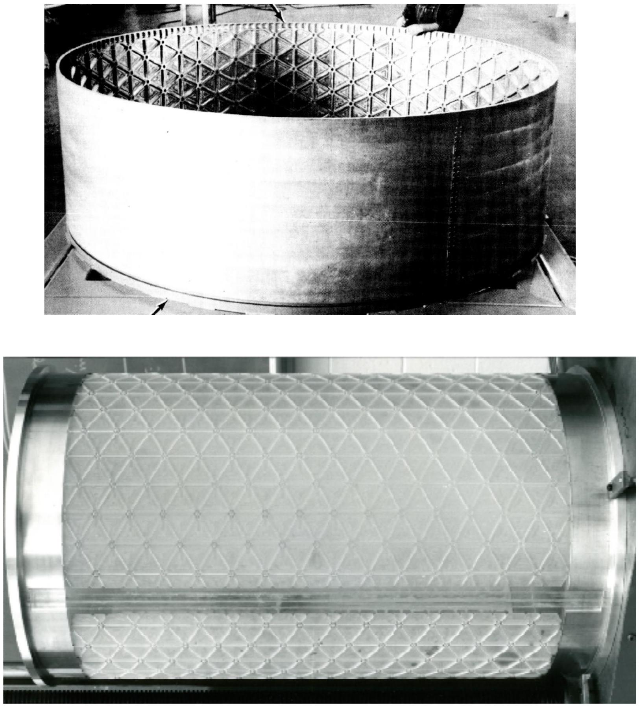

Motivation and History
A stiffened panel contains two useful length scales: the rib repeat and the complete structure. Equivalent-plate modeling connects them by turning the skin and rib stiffnesses into a constitutive relation per panel area. That makes it practical to change a construction and compare its effect on a larger plate or shell model.

Source: Nemeth, NASA/TP-2011-216882, figure 3.
Use Cases
Tensyl supports early panel sizing, comparisons of rib pitch and section, laminated skins, and stiffness distributions over shells. A calculation can produce a local load–strain relation, a stiffness-and-mass sweep, or a portable section artifact for a finite-element model.
The walkthrough follows that process for one aluminum panel. The modeling guide describes the local cell deformation and response scales.
Brief History
Equivalent-plate methods have a long history in stiffened plates and shells. Nemeth's 2011 treatise surveys work dating to 1914 and develops both equilibrium– compatibility and strain-energy formulations for stiffened laminates and lattices. Tensyl uses the strain-energy construction for its member assembly.
Classical laminate theory supplies the A, B, and D blocks. Reissner–Mindlin
plate theory adds transverse shear, retained as As. Surface geometry then
provides the local axes and curvature for a shell application.
NASA SP-8007 is one application of these stiffness properties in cylindrical shell analysis. The reconciliation connects Tensyl's matrix entries to its barred elastic constants. Full mechanics sources are listed in References.